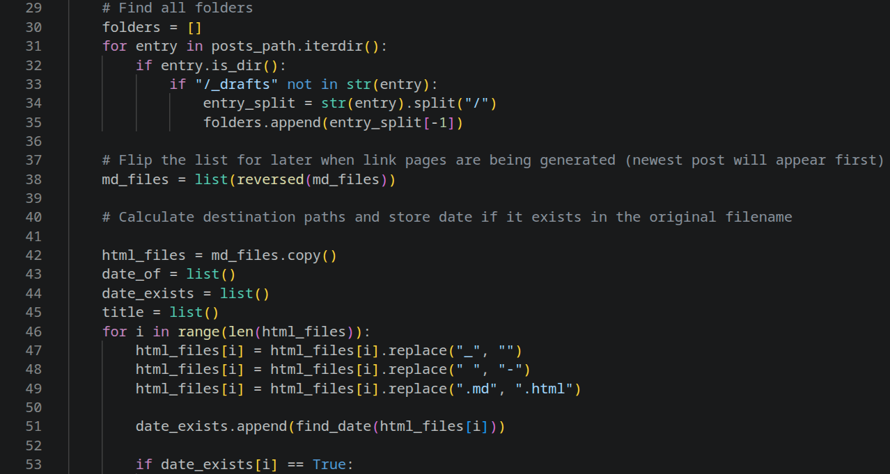

Projects!
Siteonlyh
The very website you're on. Built using HTML, CSS and my own custom Static Site Generator.
Staticlyh
A Static Site Generator in the form of a Python script. It takes a folder of a website with markdown files inside and convert them to HTML, allowing you to host a blog or similar without needing a database, or handwriting HTML for every page.
